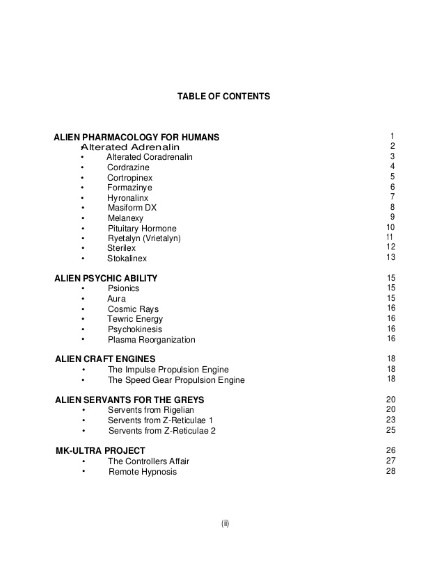

What is the Blue Planet Project?
Link to source
Government documents related to agencies that research extraterrestrials.
"Unauthorized" personal notes from scientists working in government agencies.
I personally think of this as the most reputable document concerning this topic.
Link to more information on the Blue Planet Project


Is Area 51 hiding alien technology?
Area 51 is a name for a classified USAF Facility.
One of the main components of many UFO Stories.
Believed to have conducted an "Autopsy on an extraterrestrial".
Link to more information on Area 51